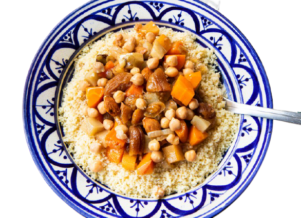
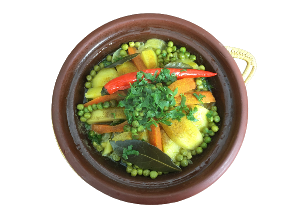

Page Creation d'un
menu
| Plate | Description |
|---|---|
|
 Couscous |
Couscous: un plat de semoule de blé cuite à la vapeur and couscoussier |
|
 tajine |
Tagine: Le tagine est une sorte de ragoût cuit dans un ragoût un mélange de viande |